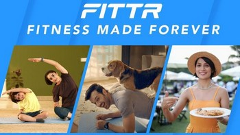
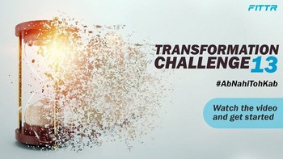
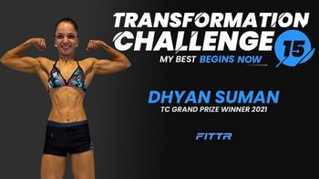
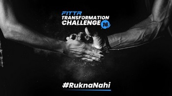
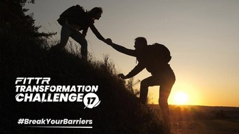

Open to senior roles in brand, marketing, growth, community, content & creative direction
200M+H&R Block India reach
200K → 800K+FITTR community, 70+ countries
$2.65M → $13.5MFITTR company ARR in 3 years
100M+Fitness Made Forever reach
Profile
I started my career as a primary researcher, and research is still where my work begins. I find the gap between how founders think their brand is seen and how people actually see it, build the insight, set the design and copy direction, and scale it across every touchpoint. Over 12 years at FITTR, H&R Block, Ketto and TransPerfect Paybooks, I have repositioned brands, directed films and campaigns across TV, OTT, cinema and outdoor, built content, social and community engines, and hired the teams that run them.
Global people management brand extension of TransPerfect, the world's largest language services and technology company.
Repositioned Paybooks upmarket on 70 ICP interviews and an NPS programme across 600 clients. Average MRR per new India client rose from $37 to $143 in two years.
Built the Global People Solution (EOR, Global HCM, Multi-country Payroll) across 43 countries, from naming and brand architecture to plans, packaging and GTM, and onboarded the first two clients myself.
Moved 290 legacy India clients to current plans for $1M in added ARR. Average client lifespan grew from 3Y 8M to 4Y 6M.
Led a full rebrand with new WhatsApp and LinkedIn channels. India CAC fell from $680 to $545, with brand-led acquisition at $454 per client.
Grew LinkedIn followers from 1,600 to 16,000+ through the Humans of Paybooks employer brand series, and built an AI pre-sales engine that opened 9 pipelines worth nearly $500K for a $68 build.
FITTRBrand Manager
MAR 2020 TO MAY 2023
India's largest online fitness and nutrition platform: a B2C app marketplace for coaching, training and community.
Repositioned FITTR from a six-pack brand to holistic, preventive health and wellbeing for everyone, through five-type audience segmentation, positioning, tonality and the 2021 rebrand.
Directed Fitness Made Forever, FITTR's brand film, from my creative brief to TV, OTT, cinema, print, outdoor and digital: 100M+ reach on a $1.3M budget, extended with KL Rahul.
Scaled the Transformation Challenge (Seasons 10 to 18) beyond the community: 45M+ reach, 2M+ app downloads and about 20% of customer acquisition, with Suniel Shetty and Vidyut Jammwal.
Grew the community from 200K to 800K+ across 70+ countries at $6 per member, with Nas Daily helping take it beyond India. Ran 1 mega, 3 to 5 medium and 30+ local events a year, including Connect Fest with Milind Soman and Mandira Bedi.
Inherited a team of 4 and hired 16 across content, social, design, video, community, performance, SEO, PR, CRM and analytics, within a 30-person marketing function. Managed about $4.3M a year in spend and 50+ influencers.
Co-created FITTR Online PT and grew it to 24% of revenue, 60% to 70% of it from outside India. Content libraries (1M+ foods, 10K+ recipes, 1,000+ videos) lifted DAU 40%, MAU 25% and in-app engagement 340%. Wrote the India GTM for FITTR HART before its 2024 launch: $900K in year one.
Led the FITTR Ambassador Program: 700 coaches enabled, coach-driven enrollment up 35% year on year.
KettoBrand Strategy Manager
SEP 2019 TO FEB 2020
India's leading crowdfunding platform for medical and social causes.
Conceived and produced PodcastMD with co-founder Kunal Kapoor: 12 survivor episodes, 10M+ streams and 100+ letters from patients.
Launched a treatment cost estimator for 100+ illnesses. 30% of users asked to start a campaign, and estimator-led campaigns raised $430K+ in three months.
Brought in 10+ sports and Bollywood celebrities, and built hospital and NGO partnerships with offline kiosks.
H&R Block IndiaJunior Executive to Associate Manager, Brand Communication
MAR 2015 TO SEP 2019
US-headquartered tax preparation company in 10+ countries. India ran B2C and B2B tax filing with a retail office network.
Owned India brand, campaigns and content end to end, including Tax Samasya Unlock, #BeTheBoss and the Tax Pledge. Campaigns and content reached 200M+ people across India.
Built the Content Lab in an empty meeting room (team of 4 plus 20 interns, 500+ videos) and the Knowledge Center (500+ articles). Organic traffic grew from under 50K to 30M per season, with 50%+ category search share and about 25% of revenue.
Led marketing for 8 retail offices on $1.2M to $1.5M per season across digital, tech parks, billboards, radio, cinema and flash mobs. Managed 800+ alliances, launched earlyGST (500+ businesses in year one) and GST Made Simple (40+ episodes).
Supported US campaigns including Get Your Taxes Won (Super Bowl, Jon Hamm) with Fallon: creative adaptation, media planning, spend monitoring and impact tracking. Promoted 3 times in 4.5 years.
SalesNXTPrimary Researcher to AM, Business Development
JUL 2014 TO MAR 2015
B2B primary research firm serving clients across the US, UK, Australia and Canada.
Ran one-on-one and group video studies and survey research for brands across major economies, then moved into sales when research conversations turned into clients.
Work I directed

Fitness Made Forever

Challenge 13

Challenge 15

Challenge 16

Challenge 17H&R Block India
The work, the campaigns and the numbers behind them: mishrawrites.com
Awards
Marketing Guru Award (Global), H&R Block, 2018, chosen from 20 nominations across 5 countries
H&R Block: Global Rising Star Award · Hall of Fame Award · Outstanding Contribution Award for India Operations
World Digital Marketing Congress: Best Content Marketing Video Series · Best Social Media Marketing Campaign · Global Youth Forum: Best Use of Facebook · DIGIXX: Social Awareness Award
Education
MBA | Balaji Institute of Technology & Management, Pune